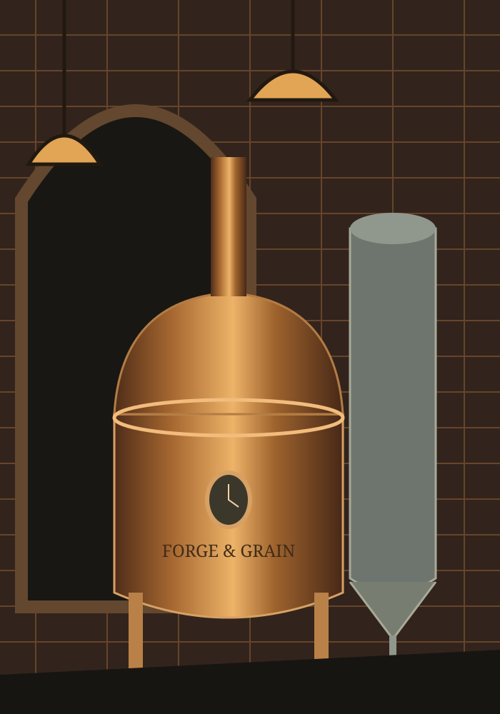

Malt
Yorkshire barley from local maltsters, kilned to the profile each recipe demands. The foundation of every pint.
EST. 2018 · SHEFFIELD
Real beer for real people. Small batches, locally sourced malt wherever possible, and a stubborn commitment to flavour. Sheffield made. Sheffield proud.
INDEPENDENTLY OWNED. NEVER COMPROMISED.
SIX TAPS. NO SHORTCUTS.
Our core range, illustrated.
Ask at the bar for today’s availability.
Hover, tap or press Enter to turn a label and read the tasting notes.
18+ · Enjoy responsibly. Sample beer menu, not a live stock feed.
THE TAPROOM
A converted Victorian forge. A long wooden bar. Six taps and enough time to talk about what’s in the glass. Pull up a stool, explore a flight of four, or settle into an alcove.
| Tuesday to Thursday | 4pm–10pm |
|---|---|
| Friday | 3pm–11pm |
| Saturday | Noon–11pm |
| Sunday | Noon–8pm |
| Monday | Closed |
OUR STORY
“We wanted to make the kind of beer
we actually wanted to drink.”TOM & DAN / COFOUNDERS
In 2018, a former steelworker and a homebrewer put a five-barrel system into an old forge in S3. Their first Ironside Pale Ale came out on a freezing January morning.
Two hundred batches later, the system is the same. Every recipe is developed here. Every beer leaves when the team says it’s ready. We’re slow by design.
THE PROCESS
Yorkshire barley from local maltsters, kilned to the profile each recipe demands. The foundation of every pint.
Our five-barrel copper kettle has worked every batch since 2018. Same equipment. Same attention to the numbers.
Precise temperature. Patient conditioning. Every beer gets the time it needs, not the time the calendar allows.
FROM THE TAPROOM DIARY
Past events from the original brief, clearly archived. Ask about future sessions below.
Archived · £18 per person · up to 12 people
A 45-minute tour of the kettle, fermentation vessels and conditioning tanks, followed by six guided tastings. Historical example; no live places offered.
Archived · £28 per person
Six beers, six Yorkshire cheeses and the reasoning behind each pairing. Archived example, not a current booking.
Archived · free entry
Four taps shared with other independent Northern breweries for one Saturday. This date has passed.
THE SHOP
A local bag estimate.
No checkout, shipping or payment service.
Two of each core beer. A proper introduction.
Etched branding. Made for a good pour.
Illustrative prices. Confirm stock, age requirements and fulfilment directly. Nothing purchased.
FIND US
Cathedral tram stop · 8 minute walk
Bus routes 7, 8, 52 · Moorfoot
Moorfoot parking · 5 minute walk
Dog friendly · Wheelchair accessible
Outdoor seating · Card payments only
Venue details follow the creative brief. Confirm accessibility and transport before travel.
Get directions on Google Maps ↗